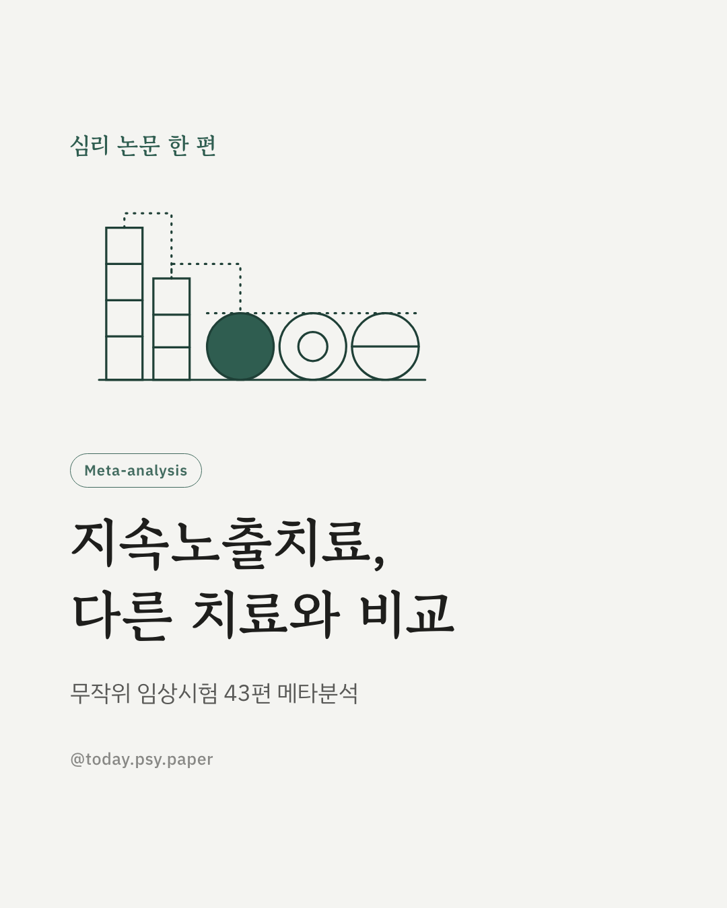
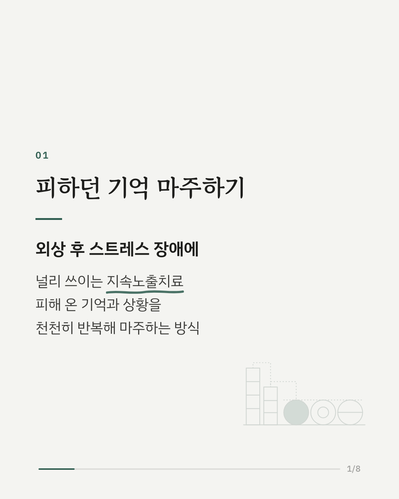
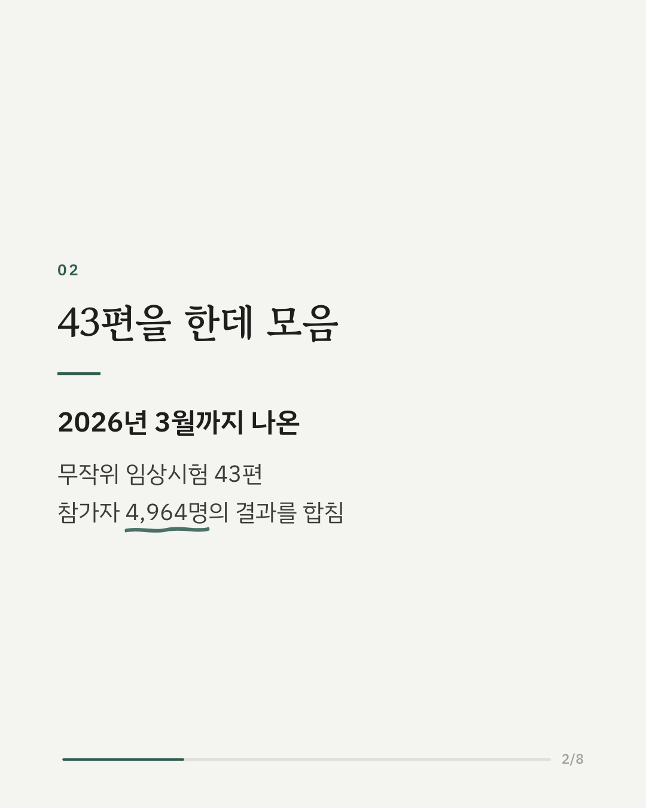
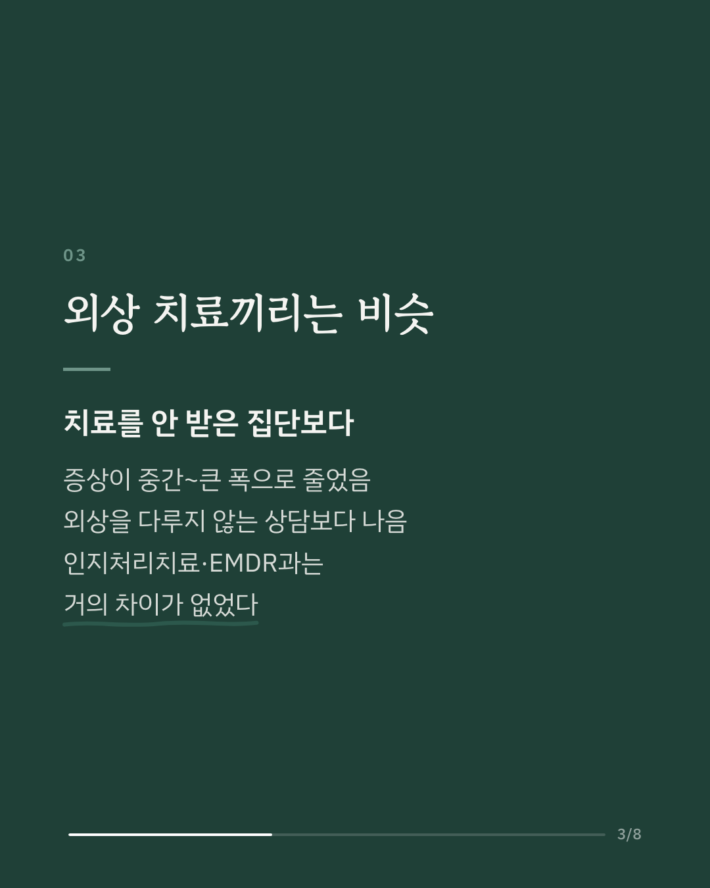
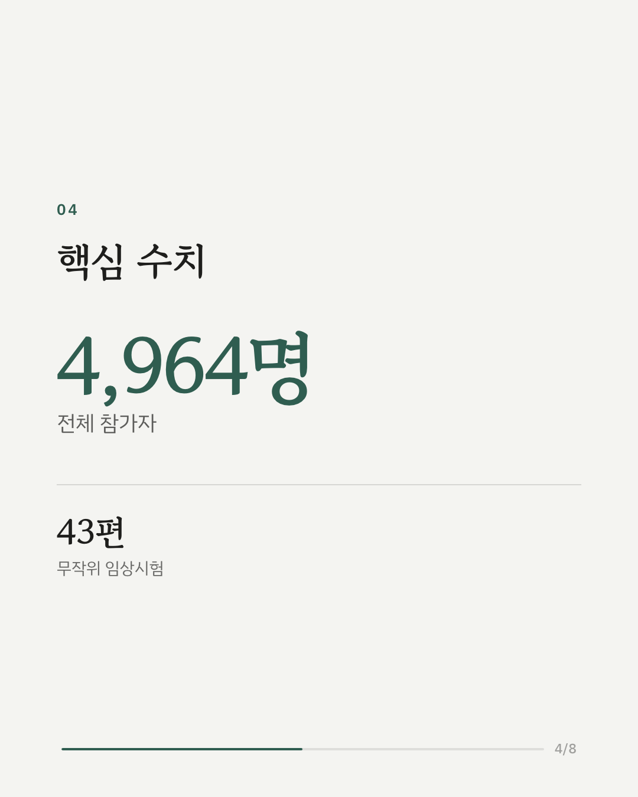
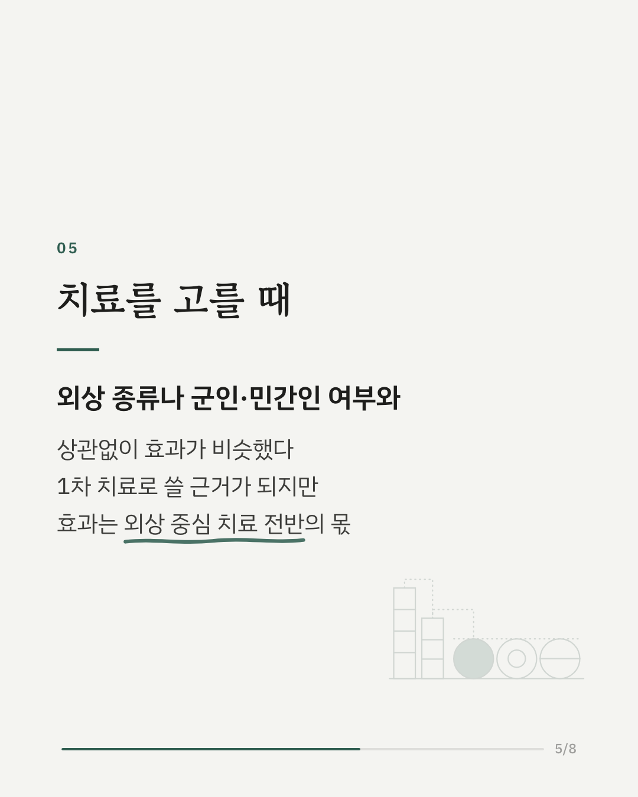
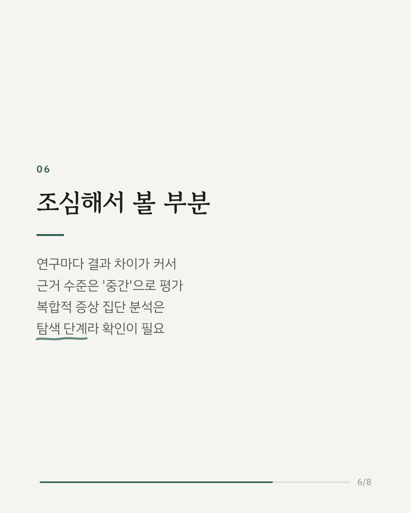
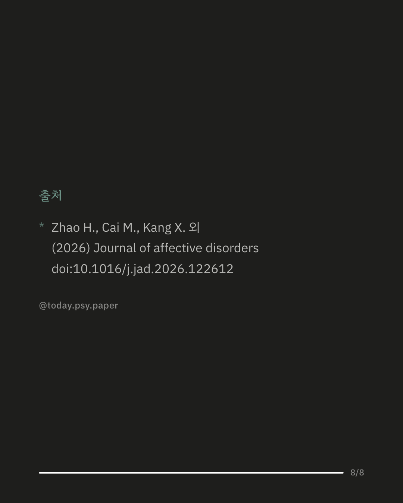

외상 후 스트레스 장애(PTSD)의 대표적인 트라우마 치료 가운데 하나가 지속노출치료입니다. 피해 온 기억과 상황을 안전한 환경에서 반복해 마주하는 방식인데, 이 메타분석은 무작위 임상시험 43편, 참가자 4,964명의 결과를 모아 그 효과를 다시 확인했습니다. 지속노출치료는 치료를 받지 않은 집단보다 증상을 중간에서 큰 폭으로 줄였고, 외상을 직접 다루지 않는 상담보다도 나았습니다. 다만 인지처리치료나 EMDR처럼 외상을 직접 다루는 다른 치료와 비교하면 차이가 거의 없었습니다. 외상의 종류, 군인인지 민간인인지에 따라서도 효과는 크게 달라지지 않았고, 회기 수가 많다고 효과가 커지지도 않았습니다. 연구자들은 지속노출치료가 1차 치료로 쓰일 근거가 충분하지만, 그 효과는 외상 중심 치료들이 함께 가진 것이라고 정리했습니다. 연구마다 결과 차이가 커서 근거 수준은 '중간'으로 평가됐고, 복합적인 증상을 가진 집단에 대한 분석은 탐색 단계라 추가 확인이 필요합니다. 출처: Journal of Affective Disorders (2026), 'Prolonged exposure therapy for posttraumatic stress disorder: A systematic review and meta-analysis of randomized controlled trials' DOI: 10.1016/j.jad.2026.122612 #임상심리 #정신건강정보 #심리학연구 #논문리뷰 #외상후스트레스장애 #트라우마치료 #지속노출치료 #심리치료
python3 publish.py 42854790